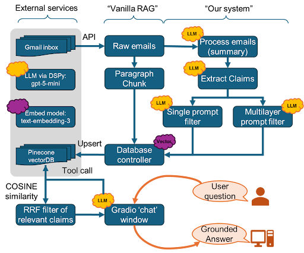

Abstract
Corporate RAG systems often ingest unstructured email and chat that mix high-value institutional
knowledge with personal, sensitive, or low-information content. We propose a pre-embedding
filtering framework that decomposes emails into granular claims and classifies each for
appropriateness using modular risk criteria (relevance, confidentiality, sarcasm, opinion,
toxicity, personal vs business, temporal) before embedding.
Using an Enron-derived claim dataset with human annotations, we compare single-pass and
multilayer LLM-based filters against human “keep/discard” labels. The best configurations reach
balanced accuracies around 73–74%, remove most irrelevant claims while preserving the majority
of important ones, reduce vector store size by ~81%, and prevent filtered content from being
retrieved by downstream RAG agents.
Teaser Figure
Pipeline: ingestion → claim extraction → risk filtering → embedding → retrieval & QA.

Notes
In the multilayer design, each claim receives per-category risk scores that drive a
keep/discard decision and can later be used to tune retrieval by risk type.
Introduction / Motivation
RAG is increasingly used to expose internal knowledge, but the underlying vector stores often
contain informal communications where business-relevant and inappropriate content co-exist in
the same message. Prior work largely optimizes retrieval and reranking after embedding, rather
than controlling what enters the database. We instead study claim-level, ingestion-time
filtering of corporate emails and ask whether it can simultaneously improve retrieval quality
and reduce privacy and compliance risk.
Approach
-
Data & ingestion. We use the Berkeley-labelled Enron email subset (~1,700 emails) as
our primary corpus and construct a claim-level dataset via LLM-based extraction.
-
Claim extraction. A DSPy-driven prompt runs three steps—selection, disambiguation,
and decomposition—to produce standalone, context-rich claims that can be embedded and
filtered independently.
-
Filters. We implement (a) a single-pass filter that considers all seven risk
dimensions at once and outputs keep/discard, and (b) a multilayer filter that assigns 0–5
risk scores per category and aggregates them into a final label.
-
Storage & retrieval. Kept claims are embedded with OpenAI
text-embedding-3-large and stored in Pinecone. A LangChain-based RAG agent
retrieves nearest-neighbour claims to answer user questions via a Gradio UI.
-
Evaluation. We compare model outputs to human labels using balanced accuracy and
confusion matrices, analyze inter-annotator agreement, and measure effects on index size and
latency versus a “vanilla RAG” baseline that stores all sentence chunks.
Implementation Snapshot
- LLMs: GPT-5.1 (primary), GPT-5-mini (ablations), GPT-5.2 (comparison).
- Prompt orchestration: DSPy for signatures, chain-of-thought, and few-shot optimization.
- Embeddings / DB:
text-embedding-3-large into a Pinecone index.
- RAG agent / UI: LangChain agent + Gradio
ChatInterface.
Filter Modules
Each claim is evaluated along seven dimensions: relevance, confidentiality, sarcasm, opinion,
toxicity, personal vs business, and temporal. The single-pass model reasons over all criteria
jointly to produce keep/discard, while the multilayer model scores each category separately and
then aggregates. The latter exposes more control over policy (e.g., tightening confidentiality
while relaxing temporal strictness) at the cost of higher runtime.
Claim Extraction
The claim extraction prompt identifies verifiable statements, rewrites them so each is
self-contained, and decomposes oversaturated sentences into independent claims where
appropriate. This produces a numbered list of claims per email, each with an ID and text
string. These claim units are the basic objects for filtering, embedding, and evaluation.
Data & Annotation
Starting from the Berkeley Enron corpus (~1,700 emails), we apply the claim extractor and then
manually annotate a subset of claims. Four annotators assign a value-of-information score, a
risk score, a binary keep/discard label (keep if value > risk), and applicable risk
categories. About 20% of claims are double-coded. Cohen’s kappa averages around 0.25 across
overlapping subsets, with most pairs near 0.3–0.35 and one lower outlier, indicating that
“appropriateness” is subjective and that model performance is bounded by this label noise.
Results
We report single-pass and multilayer filter performance, development tradeoffs, and the impact
of design choices such as chain-of-thought, example type, and model size. Vanilla RAG
(storing everything) serves as a 50% balanced-accuracy baseline for keep/discard decisions.
Inter-Annotator Agreement
Inter-annotator agreement is modest (κ ≈ 0.25 overall), particularly for subjective categories
like temporal vs durable relevance and opinion. This suggests that mid-70% balanced accuracy is
close to the attainable ceiling when evaluated against a single rater.
Ablation Performance – Single-Pass Filter
| Model Version |
Balanced Accuracy |
| Final single-layer model (1 filter, GPT-5.1, optimized few-shot) |
73.0% |
| → manual True/False examples |
72.7% |
| → removed False counter examples |
71.2% |
| → removed all examples (zero-shot) |
71.4% |
| → removed CoT prompt |
70.8% |
| → downgraded model to GPT-5-mini |
61.0% |
| Vanilla RAG baseline (no filtering) |
50.0% |
Table 1. Single-layer filter ablations showing the impact of examples, chain-of-thought, and
LLM choice on claim-level keep/discard accuracy.
Ablation Performance – Multilayer Filter
| Model Version |
Balanced Accuracy |
| Final multilayer model (7 filters, GPT-5.1, manual examples) |
71.8% |
| → LLM True/False examples |
69.8% |
| → removed False counter examples |
67.8% |
| → removed all examples (zero-shot) |
63.6% |
| → removed CoT prompt |
73.1% |
| → downgraded model to GPT-5-mini |
59.0% |
| Highest scoring multilayer model (7 filters, GPT-5.1, No-CoT, LLM few-shot) |
73.9% |
| Vanilla RAG baseline (no filtering) |
50.0% |
Table 2. Multilayer filter ablations, including the highest scoring configuration and the
effect of examples and chain-of-thought.
Model Development Accuracy & Compute Time
| Model Version |
Balanced Accuracy |
Calc. Time |
Complexity |
| Final single-layer model (1 filter, GPT-5.1, optimized few-shot) |
73.0% |
30 mins |
Very High |
| → LLM True/False examples |
72.7% |
20 mins |
Mid |
| → removed False counter examples |
71.2% |
24 mins |
Mid |
| → removed all examples (zero-shot) |
71.4% |
15 mins |
Low |
| → removed CoT prompt |
70.8% |
2 mins |
Very Low |
| → downgraded model to GPT-5-mini |
61.0% |
17 mins |
Very Low |
| Final multilayer model (7 filters, GPT-5.1, optimized few-shot) |
67.8% |
132 mins |
Very High |
| → manual True/False examples |
71.8% |
101 mins |
High |
| → LLM True/False examples |
69.8% |
52 mins |
High |
| → removed False counter examples |
67.8% |
45 mins |
High |
| → removed all examples (zero-shot) |
68.2% |
51 mins |
Mid |
| → removed CoT prompt |
70.1% |
16 mins |
Mid |
| → downgraded model to GPT-5-mini |
59.0% |
146 mins |
Mid |
| Highest scoring multilayer model (7 filters, GPT-5.1, No-CoT, few-shot) |
73.9% |
20 mins |
High |
| GPT-5.2 multilayer comparison (7 filters, GPT-5.2, optimized few-shot) |
66.9% |
73 mins |
Very High |
| → manual True/False examples |
65.0% |
62 mins |
High |
| → removed CoT prompt, no examples |
61.6% |
16 mins |
Mid |
Table 3. Development-time tradeoffs for single-layer and multilayer filters, showing the
accuracy, runtime, and complexity consequences of different prompt and model choices.
Conclusion & Future Work
Pre-embedding filtering of informal corporate communications can substantially improve the
safety and efficiency of enterprise RAG. Our claim-level pipeline removes most irrelevant
content while preserving the majority of important claims, operates near the human agreement
ceiling, and shrinks the vector store by roughly 81%, which also speeds up retrieval. Qualitative
probing confirms that discarded information is no longer recoverable by downstream RAG agents.
Future Work
Future expansions of would be expected to expand and refine claim-level annotations, extend the pipeline to chat and meeting
transcripts, explore redaction alongside filtering, reduce latency via lighter models, and make
retrieval explicitly risk-aware by using multilayer scores directly during search and generation.